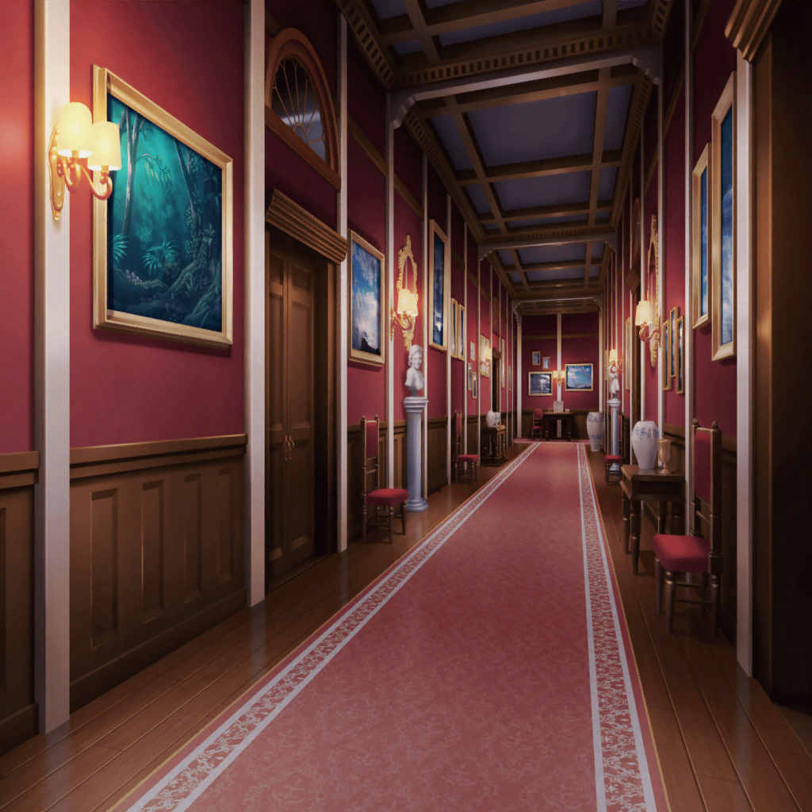
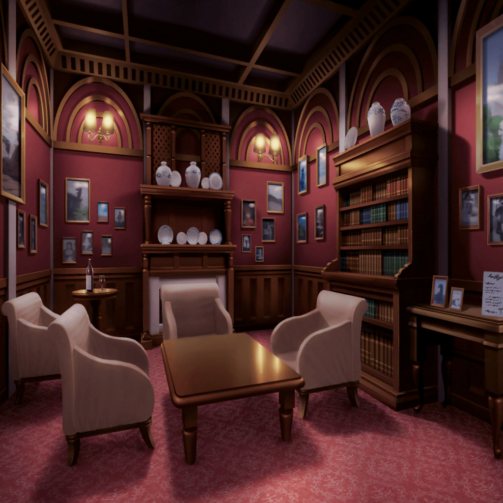

廊下
イヴ
あ、あんなところに、アヤさんとヒナさんがいましたよ！
アヤさーん！ ヒナさーんっ！
彩
あ、イヴちゃん！
それに千聖ちゃんと麻弥ちゃんも！
よかったー、やっと会えたねー！ 無事で何よりだよっ！
千聖
ふふ、彩ちゃんたら大げさね。
これはあくまでも番組なんだから、無事に決まってるじゃない
日菜
あ、麻弥ちゃん！
金のジャック・オー・ランタン持ってるじゃん！
麻弥
はい、こちらはなんとか２個ゲットしました！
彩
私達も２個ゲットしてるから合わせて４個っ！
いよいよ次が最後ってことだよね！
イヴ
アヤさん達はここで私達を待ってくれていたんですか？
彩
待ってたっていうか、なんていうか……
この扉、見てみて
千聖
『古城に閉じ込められし哀れな少女達。
五人揃ってこの扉の奥へと進め』
……ここから先はみんなで揃って行け、ということでしょうね
イヴ
ついにここまで来ましたねっ！ アヤさんの言う通り、
いかにも次が最後の試練という感じがします！
日菜
最後かどうか、麻弥ちゃんに聞けば早くない？
どーなの、麻弥ちゃん？ これで最後？
麻弥
え？ ひ、日菜さん？
おっしゃってる意味が、よくわからないんですが……？
日菜
え？ だって麻弥ちゃん、仕掛け人側の人でしょ？
次が最後かどうかくらい、わかるよね？
麻弥
……っ！？
な、何を言ってるんですかっ！？
千聖
日菜ちゃん……
その話は気づいていてもまだ言ったらダメよ。
番組の都合だってあるんだから
日菜
えー、別にいいじゃーん。
都合が悪かったら、カットしてくれると思うし
彩
ちょ、ちょっと待って！
どういうこと？ 麻弥ちゃんが仕掛け人？
イヴちゃん、わかった？
イヴ
いえ、私もよくわかりません……
麻弥
ううっ、みなさんすみません！
実はですね……
麻弥
……というわけで、ジブンがこっそりテーブルにカードを置いたり
金のジャック・オー・ランタンを置いたりしてたと……
麻弥
ほ、本当にすみませんっ！
スタッフの人から頼まれてしまいまして！
千聖
きっと、無人島でのロケの時に、麻弥ちゃんが問題を
あっさりクリアしてしまったから、先に手を打っておいた……
ということなんでしょうね
日菜
あたしは最初の問題の時にあやしーなーって思ったよ。
あんな簡単な問題、麻弥ちゃんが解けないわけないし
彩
え！？ 日菜ちゃん、そんな最初っから気づいてたの！？
教えてよ〜！
千聖
今思えば、暗闇になるたびに、その場から動かないように
声をかけてくれたのは、麻弥ちゃんだったわね
麻弥
暗闇でむやみに動いてしまうと危ないですからね。
スタッフさんにも、気をつけるように言われてたんで……
麻弥
逆に謎解きのヒントは一切出さないようにと
言われていたんですが……
どうしても応援したくなってしまって、つい……
イヴ
そういうことだったんですね！
マヤさん！ さりげないヒント、ありがとうございました！
千聖
あのヒント、さりげなかったかしら……？
麻弥
みなさん……
本当にすみませんでした！
彩
そ、そんな謝らないで！
いろんなこと考えないといけないから、
麻弥ちゃんもきっと、すっごい大変だったよね？
麻弥
１番大変だったのは千聖さんに
気づかれてしまったあとかもしれないですね。
内心ホントにビクビクでした……
千聖
麻弥ちゃん、もう少し演技の勉強をしたほうが
よさそうね♪
麻弥
あ、はは……
ジブンが演技に向いてないということが、
嫌という程わかりました……
日菜
あははは！
……あ、そうそう！ ね、麻弥ちゃん！
この扉が最後の問題ってことでいいんだっけ？
麻弥
ジブンが聞いているのは実はここまでなんです。
ここで合流してからの流れは、一切聞いていなくって……
日菜
そうだったんだ！
じゃあ、ここからがあたし達の本領発揮ってことだね！
彩
よーし！
みんなで力を合わせて、最後の問題クリアしようね！
一同
おー！

最後の部屋
彩
ここが最後の部屋、か……
何が待ち構えてるんだろ……？
千聖
大きな柱時計と、暖炉……
これといって、変わったところはないように見えるけど……
麻弥
あ！ 向こうに金色の扉がありますよ！
穴が５つ空いているようですね
日菜
たぶんあそこに金のジャック・オー・ランタンを入れれば、
扉が開くって感じじゃん？
イヴ
なるほど！ ヒナさん、さすがです！
彩
あ、ねえ見て！ 床の真ん中にカードが落ちてるよ！
日菜
おっ！ さすが彩ちゃん！
特技、問題を早く見つけるやつっ！
彩
最後は見つけるだけじゃなくて、
問題を解くのもがんばるからね！
彩
えっと問題文は……
『真実のジャック・オー・ランタンは１つだけ』……だって
千聖
真実のジャック・オー・ランタンは１つだけ……？
いったい……？
麻弥
……ん？
何か音が聞こえませんか？ 地響きのような……
イヴ
聞こえます……っ！！
これは……暖炉の方から……！？

彩
わ、わわ！ な、なに、これっ！？
麻弥
だ、暖炉から、大量のカボチャが転がって来ますよ……っ！
千聖
ものすごい数だわ……
まだまだ、転がってくるみたいね……
日菜
あははは！
あっという間に、部屋中カボチャだらけになっちゃったねー！
彩
もしかして……
この中から金のジャック・オー・ランタンを
見つけろってこと！？